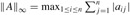
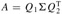

|
|
< Day Day Up > |
|
There are many excellent texts available that describe numerical and scientific computation in much greater detail than we have room for here. The following are especially readable: George and Liu [113], Golub and Van Loan [125], Press, Flannery, Teukolsky, and Vetterling [248], [249], and Strang [285], [286].
Golub and Van Loan [125] discuss numerical stability. They show why det(A) is not necessarily a good indicator of the stability of a matrix A, proposing instead to use ∥A∥∞ ∥A-1∥∞, where . They also address the question of how to compute this value without actually computing A-1.
The publication of Strassen's algorithm in 1969 [287] caused much excitement. Before then, it was hard to imagine that the naive algorithm could be improved upon. The asymptotic upper bound on the difficulty of matrix multiplication has since been considerably improved. The most asymptotically efficient algorithm for multiplying n × n matrices to date, due to Coppersmith and Winograd [70], has a running time of O(n2.376). The graphical presentation of Strassen's algorithm is due to Paterson [238].
Gaussian elimination, upon which the LU and LUP decompositions are based, was the first systematic method for solving linear systems of equations. It was also one of the earliest numerical algorithms. Although it was known earlier, its discovery is commonly attributed to C. F. Gauss (1777-1855). In his famous paper [287], Strassen also showed that an n × n matrix can be inverted in O(nlg 7) time. Winograd [317] originally proved that matrix multiplication is no harder than matrix inversion, and the converse is due to Aho, Hopcroft, and Ullman [5].
Another important matrix decomposition is the singular value decomposition, or SVD. In the SVD, an m × n matrix A is factored into , where Σ is an m × n matrix with nonzero values only on the diagonal, Q1 is m × m with mutually orthonormal columns, and Q2 is n × n, also with mutually orthonormal columns. Two vectors are orthonormal if their inner product is 0 and each vector has a norm of 1. The books by Strang [285, 286] and Golub and Van Loan [125] contain good treatments of the SVD.
Strang [286] has an excellent presentation of symmetric positive-definite matrices and of linear algebra in general.
|
|
< Day Day Up > |
|